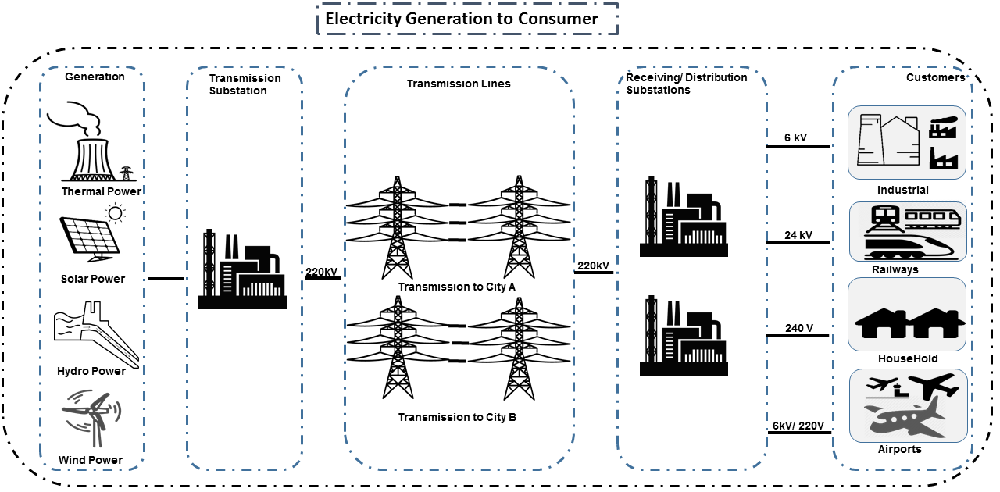
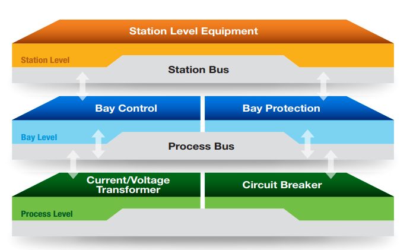
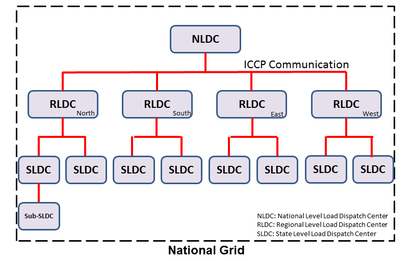
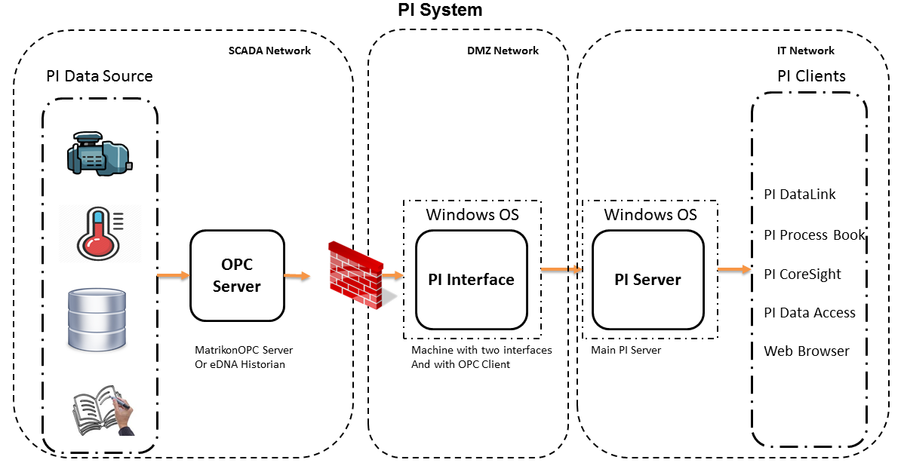
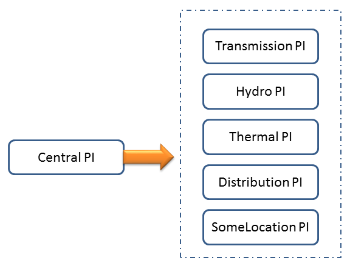
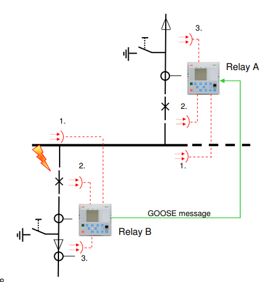
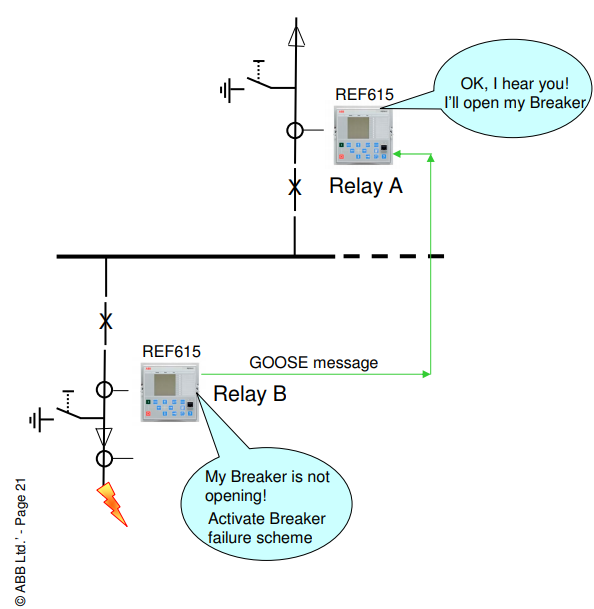
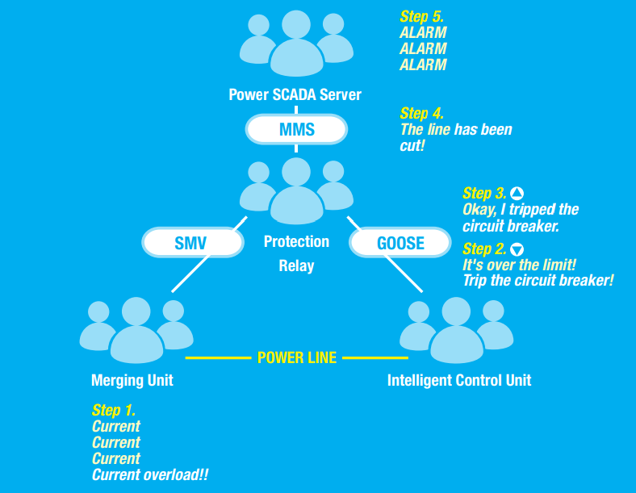

Critical Infrastructure Series : Electrical Grid¶
Hey There! Are you Pentesting a Electrical Grid? or responsible for securing it? or New to the concept of Electrical Grid? Here are the basics which would help you in your journey!
We will cover
- General concepts about Electricity.
- How the electricity travels from the Generation to the Consumption.
- General SCADA Architecture of the Electrical Grid (Transmission/ Distribution/ Customer) Substation.
- Metering : Availability Based Tariff and Automated Meter Reading
- International Standards/ Protocols used in the Electrical Grid.
- Solutions/ Softwares? used in the Electrical Grid.
- Cybersecurity : Vulnerabilities and Remediations (how to secure the Electrical Grid) and basic hygiene required.
Note
By no means, we are Electrical Grid/ SCADA expert. This is just an effort to write down our understanding of Electrical Grid.
Electricity¶
An electric current can be compared to the water flowing through a hose.
- The pressure inside the hose, or the force with which the water flows, is like voltage (V). V / Volt is the standard unit for measuring the force of electricity, or voltage.
- The hose’s discharge, or the amount of water flowing, is called current (or I), measured in amperes (A). A / Ampere is the unit for measuring the amount of electric current.
- Friction along the hose’s inner wall is similar to resistance (R). It is measured in Ohms and expressed as Ω. It is the unit for measuring the resistance of a substance through which electricity flows.
- Voltage, current, and resistance are all related. V = IR, I = V/R, R = V/I
- Power is what is produced by multiplying voltage by current (VA) or by (I^2 x R), and is expressed in watts (W). Consumption is expressed in watthours (Wh) and indicates the energy used by a system or device over a given period of time. W / Watt is the standard unit for measuring power, including that of alternating current.
Other Facts¶
- Direct Current: In direct current, electrons move in a a single direction from negative to positive.
- Alternating Current : In alternating current, electrons change direction 50-60 times per second (expressed at Hertz, or Hz).
- Electricity always takes the path of least resistance. When a person gets an electric shock, their body becomes that shortest route. Why? The body is made up of approximately 70% water, and water, like metal, is an excellent conductor of electricity.
- Tree branches can also conduct electricity because they have liquid, or sap, inside. Even low-voltage current can be lethal or very harmful to humans.
Generation to the Consumption¶
At any rate, the electricity we use is transmitted via overhead cables that are attached to tall support structures called towers, which link generating station switchyards to power intersections called source substations. Power is then routed through satellite substations before running along the distribution lines to finally reach our homes. The fascinating thing is that we use electricity as soon as it is generated. The transfer of electricity therefore occurs at breakneck speed. Actually, it moves nearly as fast as light, which rushes along at 300,000 kilometres per second!
Below is the rough diagram visualizing the flow of electricity from Generation to Consumption.
{kind=link}
The transmission of electricity involves a series of transformations, checkpoints and crossroads. These three basic functions are carried out along the way between the power station and the home.
A transformer is used to raise or lower the voltage of alternating current. Raising voltage for transmission reduces the loss due to the resistance of the power lines. As voltage is inversely proportional to current (R = V/I) and the power consumption of the power lines (at this scale the tranmission lines act as a source of resistance) and that the power consumption is given as I^2 x R it is more efficient to increase the voltage in order to reduce the current. As electrical energy approaches consumption centres, its voltage is lowered gradually to the point where homes are supplied with low-voltage power, namely 120/240 volts.
Generation Station ---> SwitchYards ---> Strategic Substations ---> Source Substation ---> Satellite Substation ---> Wood Pole/ Underground Lines ---> Home
US:(13800 Volts) (735,000 Volts) (735,000 Volts) (120,000 Volts) (25000, 49000 Volts) (25000 Volts) (120/240 Volts)
IN: (220,000 Volts) (220,000 Volts) (110,000 Volts) (33000, 22000 Volts) (11000/6000 Volts) (415/220 Volts)
Generation¶
There can be multiple ways to generate power
Hydroelectric generating station¶
Plant that produces electric power by using water to propel turbines, which, in turn, drive generators.
Thermal Generating Station¶
- Diesel generating stations
- Conventional thermal generating stations
- Nuclear generating stations
- Gas-turbine generating stations
Renewable Energy¶
- Wind Power
- Solar Power
- Biomass Energy
- Geothermal Energy
Installed capacity : The maximum generating capacity of all turbinegenerator units in a powerstation at a given time. Expressed in watts, it is equal to the capacity of all the generators in winter operating conditions (water temperature at 5°C).
At a generating station, if rotors have 32 pairs of electromagnets. To supply a 60-Hz alternating current, they must therefore rotate at a speed of 112.5 revolutions per minute (RPM). Here is the formula that was used by engineers: 32 pairs of electromagnets x 112.5 RPM = 3,600 RPM or 60 revolutions per second (60 Hz).
Towers¶
Transmission towers support the high-voltage conductors of overhead power lines, from the generating station’s switchyard right up to source substations and satellite substations located near populated areas. Their shape, height and sturdiness (mechanical strength) depend on the stresses to which they are exposed. Towers do not transmit electricity themselves.
Towers Wires?¶
To stabilize power transmission and avoid energy losses, the alternating current transmitted on high-voltage cables is made up of three parts, or phases. Each phase includes between one and four wires, or conductors, depending on the voltage level. Phases with more than one conductor are called conductor bundles. In addition, to protect the tower from lightning, a ground wire is included.
Tower Wires not straight?¶
Wires strung between two transmission towers seem to sag in the middle. Tensioning the wires to keep them straight would require much stronger and therefor expensive towers for no benefit and remove any slack to counter contraction and expansion due to hot and cold weather.
Substations¶
Substations perform many functions that help to improve the dispatching and flow of electrical energy. For example, substations are essential in dividing long power lines into short sections that, when isolated, lessen the impact of a fault or routine maintenance on continuity of supply.
They are equipped with the
- equipment for measuring current and voltage.
- protection systems such as circuit breakers that can shut down a line.
- control devices such as disconnecting switches that switch electricity from one line to another almost instantaneously. for example, when sections of a power line are out of order.
- Other equipment, such as shunt reactors, capacitors and compensators, also helps regulate voltage.
Most substations are automated and subject to remote control. Only the more strategic substations have full-time technical staff; at most other substations, mobile teams perform maintenance.
Substation Flow?¶
Let’s say a there exists a substation which converts 735KV to 120KV or 220kV to 110kV. The below things will happen
- When a electrical line of 735/ 220kV enters the substation, it is measured by Metering Equipments for ensuring Quality and Safety. This is done using potiential transformers and current transformers.
- Various units at a substation in 735/ 220kV line are used to do Protection and Switching - Railroad electricity by isolating sections, open circuits or shunt electricity to other devices. Mainly done by circuit breakers, disconnect switches and busbar assemblies.
- Step-down transformer : Electricity is stepped down from it very high transmission voltage (735/ 220kV) to subtransmission voltage (120KV) at which it is carried to a various regional substations. This is achieved by power transmission.
- After this, there is Protection and Switching for 120kV line and again measured by Metering Equipments to ensure 120kV is achieved before electricity at 120kV leaves this substation.
{kind=link}
Substations maybe of different types:
- Transmission Substation (TSS) : Raises the voltage of electricity. This makes it easier to transmit electrical power because the higher the voltage the lower the effect of the resistance of the transmission lines.
- Distribution Substation (DSS) : Contains transformers which lower the voltage for a second time and supply the lines which distribute the power in cities and towns.
- Customer Substation (CSS) : Mostly, connected remotely via GPRS/ 3G/ 4G via a private APN.
Substation Data Flow¶
Process Level
The process level comprises devices such as circuit breakers and data acquisition equipment used to measure the current, voltage, and other parameters in different parts of the substation.
Bay Level
The bay level consists of the IEDs that collect the measurements provided by the process level. The IEDs can make local control decisions, transmit the data to other IEDs, or send the data to the substation SCADA system for further processing and monitoring.
Station Level
The station level is where we’ll find SCADA servers and HMIs, as well as the human operators (if needed) who monitor the status of the substation.
Bus
The Process Bus handles communication between the Process Level and the Bay Level, and the Station Bus handles communication between the Bay Level and Station Level.
Process bus replaces hard wired connections with communication lines. “Smart” CT’s, PT’s and switchgear continuously transmits data over the process bus and any upstream devices that wish to use the data for protection, measurements, metering, or monitoring do so by monitoring the communications.
{kind=link}
Electrical parameters of a substation¶
- Analogs
- Active Power (of Lines, Generators and Transformers)
- Reactive Power (of Lines, Generators, Transformers, Reactors and Capacitors)
- Bus Voltage
- Bus frequency
- Transformer TAP position
- Digital Status
- Breaker position
- Isolator Position
- Protection signals, SOE (Sequence of events), etc.
- Pulse signals
- Energy measurement etc.
- Weather Parameters
System operations¶
Remote automatic controls perform most of the tasks needed to ensure the flow of energy from the power station to the home. These advanced monitoring and command systems could be called the grid’s “reflexes.” However, human intervention is constantly required to make important decisions related to control and security, based on the most recent and relevant data available. This decisionmaking centre is at the heart of the energy-supply chain: it is the “brains” of the power system. Mostly, it is called the System Control Centre, or SCC.
The SCC operates round the clock and responds instantly to the power needs of the Region first priority—followed by those of its customers outside the region. The SCC regulates the generation and transmission of power, as well as energy trading with neighboring power systems through interconnections. To improve the decision-making process, the SCC centralizes all the information required for system operations. Several regional telecontrol centres implement SCC decisions regarding power generation and transmission, and power trading via interconnections.
System Operators¶
Three system operators coordinate power grid operations.
- The generation system operator can request that a power station increase or lower its output.
- The transmission system operator can call for the opening or shutting down of a power line.
- The interconnection system operator oversees the delivery of electricity outside region as well as electricity imports from neighboring systems; when the demand for electricity is high in region, he has the authority to reduce or delay exports.
System operators make real-time decisions; in other words, they have an immediate impact on power system performance and security.
When we press on a switch—and the source of electricity is hydropower, as in region are in effect requesting that more water drive a turbine in order to generate more electricity and transmit a greater power flow from the generating station to our home. Turning on a single television set will not make a big difference. But if everyone in region were to turn on their set at the same time, demand would increase significantly!
Power generation must always be equal or superior to power consumption.
Balancing supply and demand¶
Distributing electric power is like distributing water: it is always better to have too much to be sure to have enough. As soon as a current is generated, it must be used. The reverse is also true: as soon as we turn on an appliance, power must be available. Regardless of the quantity required, electricity suppliers must meet demand instantly! Their capacity to respond quickly and effectively to variations in demand will depend on the flexibility of their generation facilities.
As a rule, medium-voltage three-phase alternating current leaves a satellite substation at 25,000 volts via underground power lines that become overhead lines some distance away. An overhead distribution system is made up of three bare phase conductors attached to insulators at the top of electricity poles. The bare neutral conductor, located a few metres beneath those three wires, is connected to a grounding system and contributes to occupational and public safety. The distribution grid also includes transformers, which are mounted on electricity poles; their purpose is to lower voltage from 25,000 volts to 120/240 volts—voltage intended for domestic use.
Electricity consumption¶
Every time we use an electrical appliance, we are consuming power. The resulting need for electricity from a utility is called demand. When you flick a switch, the required power leaves the distribution system for use in your home. Since there’s a cost to consuming this power, meters record precisely the amount of electricity that flows into a building. As well, certain devices and procedures can help promote safety when using electricity.
From the meter to the breaker¶
Power system stops at the electric meter in your home. This highly accurate instrument records the volume of power used by a customer. The meter is connected to a distribution panel, also known as the breaker panel. This apparatus includes a main switch that can cut power to the entire house and contains as many circuit breakers as there are circuits in the house.
From the breaker to the user¶
Breakers are switches that automatically cut electric current when an overload or some other anomaly occurs. They prevent circuits from overheating, for instance because of a wiring problem or a defective appliance. To form a circuit, each breaker is linked by three wires to a series of outlets or electrical boxes. Some dedicated circuits have only a single outlet or electrical box—for example, the refrigerator and the water heater. Other circuits are wired to outlets with a ground fault circuit interrupter, such as bathroom outlets, to provide added protection against electricity-related accidents in the home.
Most of the stuff has been taken completely from Electricity from the powerstation to the home
National Grid¶
We might have heard a term called “National Grid”. Let’s say there’s a country which is divided into four regions NR (Northern Region), WR (Western region), SR (Southern Region) and ER (Eastern Region). Each regional grid is managed by an control center called Regional Load Dispatch Center (RLDC) and each state power system is controlled by a State Load Dispatch center (SLDC). System under SLDC has further been into Sub-Load Dispatch Centers (Sub-LDCs).
National Load Dispatch Center (NLDC) coordinates the activities of all RLDCs. NLDC, RLDCs, SLDCs and Sub-LDCs have their own SCADA systems, integrated in a hierarchical structure. RLDC being at the top of hierarchy at regional level, coordinates the day-to-day operation of a region in consultation with SLDCs.
{kind=link}
Hierarchical Structure¶
SCADA stands for Supervisory Control And Data Acquisition, and is hierarchical in nature having two distinct hierarchies - one at national level other at regional level. At national level, SCADA/ EMS (Energy Monitoring System) system of all RLDCs report to NLDC. Data from each RLDC is transmitted to NLDC in real time on dedicated communication lines.
Hierarchy at Regional Level¶
At regional level RLDC acts as apex body and coordinates the all inter-state activities of SCADA/ EMS systems of SLDCs of a region. SCADA systems of all Sub-LDCs of a state reports to the SLDC of that state.
Functions implemented in SCADA/ EMS at RLDC and SLDC levels¶
Main components of the SCADA system at RLDC and SLDC are SCADA/ EMS server and ICCP server. SCADA/ EMS or data server maintain all data acquired from other SLDCs etc and make it available to display and reporting. ICCP (Inter Control-center Communication Protocol) server acts as gateway for transfer of data between SLDCs and between RLDC and SLDCs. SCADA/EMS system at RLDC, SLDC and Sub-LDC are based on distributed architecture and open standards.
SCADA Functions¶
- Data acquisition from RTUs and storage of data in online database; Processing of data for converting the raw values to engineering values, checking quality, assigning quality flag and checking limit; Historical data storage and retrieval.
- Supervisory control of power system element.
- Reconstruction and replay of events; Sequence of events recording; Real time and historical trends.
- Protective and informative tagging of power system device.
- Load Management; State Estimation.
- Generalized calculation – for adding and removing operator’s defined calculations.
- Providing user interface to operators.
- Inter control center communication.
EMS Functions¶
- Real time generation function – allows the operator to monitor, analyze and control real time generation.
- Automatic generation control (AGC).
- Economic dispatch - helps the dispatcher to determine economic base points for a selected set of units.
- Reserve monitor – for calculating spinning reserve, operating reserve and regulating reserve.
- Production costing – calculates the current cost of generating power of online units.
- Real time network analysis; Real time contingency analysis.
- Load Forecasting; MIS Reporting; Transaction scheduling
SCADA Architecture¶
Electrical SCADA architecture mainly contains the below components. Also, The hardware configuration at LDC level is fully duplicated. Each and every hardware device has its backup device in active and hot standby state. In the event of failure of operational hardware the back will take up the functionality.
Below diagrams display a rough architecture for the Transmission and the Distribution. Both contains the
- Field Devices
- RTU with Digital Input/ Digital Output Points
- Protection IED Devices (Isolaters/ Circuit Breakers)
- Condition Monitoring Devices (Temperature/ Humidity)
- Multi-Function Meters (For the measurement of Voltage/ Current/ Power etc.)
- Bay Control and Protection Unit
- FRTU - Field Remote Terminal Unit (Mostly at Customer Substation connected via GPRS/ 3G/ 4G)
- Gateway/ Data Concentrator (Can be PC Based Gateway)
- Servers
- SCADA (The main server - from where everything can be controlled/ monitored)
- FEP (Front End Processor) - Collects the data from the Gateways
- Historian - Stored the data for historial purposes
- OT-AV - Antivirus Server on the SCADA side.
- DMZ Servers
- Web Server : For possible display of any information
- ICCP Server : For transfer of information from control-center to control center.
{kind=link}
{kind=link}
{kind=link}
{kind=link}
{kind=link}
SCADA/ EMS Server¶
For availablity purposes, there are always two SCADA/ EMS server on in the main and another in the hot standby mode. Both connected to both the LANs. One SCADA/ EMS servers acts as main server and other remains in hot standby mode and in synchronism to the main server. Standby server keeps monitoring the health of other server and take over the responsibility in case failure of main server.
Data reporting to Master station (control centre)
- Through IEC 60870-5-101/ 60870-5-104 protocol.
- Communication system: PLCC, Fibre optic and GPRS.
- Collection of data at Master station through Front End server (CFE).
- Front end processor sends the data to SCADA server.
FEP Server¶
- Manages communication with the field devices.
- Supports communication with variety of protocols.
- Cyclic polling and event based communication, provides messages queuing.
- Infrastructure to report from RTU to master station.
Communication Principles¶
Let’s see what all ways the CFE can request the data.
- Cyclic Polling
- Front-End communication server requests data periodically from each RTU.
- Period times vary from 2-4 up to 10-15 seconds.
- Report By Exception
- Cyclic polling as above
- RTU only responds if a value has changed
- Balanced protocols
- The RTU can send a request to be polled by the Front-End
Communication between SCADA and RTUs takes place through Communication Front End (CFE). RTUs critical to the grid operation are connected with two separate communication channels one for each CFE. Other RTUs, have one communication channel but are connected to both the CFEs through splitters. This concept ensures that data from the RTUs will be available to the control center in case of failure of any communication channel or CFE.
Remote Terminal Unit¶
Remote Terminal Unit may include the below
- Remote monitoring and control functions
- Process monitor for collection and visualization of data signals (hard-wired, serial, Ethernet)
- Communication gateway communicating via several protocols at the same time (e.g. Modbus, DNP3.0, IEC 61850, etc.)
- Programmable Logic Controller (PLC), able to control industry processes automatically.
- Human Machine Interface (HMI) provides overview similar to a small SCADA System.
The above points can be implemented all together in one box or with different components.
RTU
________|_______
| |
Parallel I/Os Sub-devices such as IED
Measurement and acquisition of electrical parameters¶
- Serial communication using
- RS232 : RS232 defines the voltage for the path used for data exchange between the devices. It specifies common voltage and signal level, common pin wire configuration and minimum, amount of control signals.
- RS485 : RS485 is the only of the interfaces capable of internetworking multiple transmitters and receivers in the same network.
- RS422 : RS422 is a high speed and/or long distance data transmission. Each signal is carried by a pair of wires and is thus a differential data transmission system.
- Standard protocols
- Modbus
- IEC 60870-5-101/104
- DNP3
- ICCP
- OPC
Typical applications of RTU in Electrical Grid¶
- Feeder Automation
- Gas-insulated compact switchgear units
- Pole-top RTUs
- Capacitor banks
- Secondary distribution substation
- Demand Response
- Fault detection/ Isolation / Restoration
- Voltage Optimization
- Decentralized energy resources
- Primary distribution substation/ Transmission/ Sub-transmission
- Classic RTU
- Substation automation
- Gateway
RTUs and PLCs Difference?¶
| RTU | PLC |
|---|---|
| Operates Event-driven | Operates cyclical, cycle is performed non-stop |
| Transmit changes only | Transmits all information cyclical accr. to program. |
| Transmission path is long -> Slower communication speed | Pre-programmed cycle with predictable cycle time -> fast |
| Only requested data is communicated, very efficent | All programmed data will be communicated, less efficient |
| Own time-stamping of events, data will be transmitted with timestamp to central control unit | Central control unit does the time stamping |
| Various voltages (24,60,110,125 VDC) | Mainly 24 VDC process voltage |
| Not limited to any kind of application | Mainly for local area control applications |
| Protocols and norms are different |
Field RTU¶
Intelligent Electronic Devices¶
- Relay to control and protect field devices
- Digital protective relay with added functionality
- Can usually interface with RTU
- Report events and measurement data
- Receive commands from RTU/SCADA
- Advanced functions need IEDs to communicate with each other
- Horizontal communication
- Control functions can include
- Load tap changer controller
- CB controller
- Capacitor bank switches
- Recloser controllers
- Voltage regulators
These devices provide
- Overcurrent Protection
- Line Protection
- Distance Protection and control
- Line differential and control
- Combined line differential and distance protection and control
- Breaker management and control
- Overcurrent protection as backup for lines
- Transformer differential protection
- Motor protection
- Generator protection
- Busbar protection
- Bay controller with control /interlocking functions and monitoring, optionally with protection functions
- Fault recorder and power quality recorder
IED Interfaces¶
- Analog Input
- CT & VT for Current & Voltage measurments
- Ranges 1-5A, 100-200 V AC
- Temperature
- Binary Input
- Breaker status, Normally using two indicators to indicate intermediate status
- Tap changer positions
- Binary outputs
- Controlling the operation of circuit breakers/switches
- Two BO in series for normal switching
- One single BO for circuit breaker tripping
- Analog outputs
Bay Control Unit¶
Bay controller : A device that controls all devices related to a single bay (transformer, feeder,..) and communicates with relays for functionality
- Station Controller, the top level controller in a substation
- Bay controller, the unit controlling a bay in a substation
- Relay, at the lowest level controlling a single object
- Relays and Bay controllers are implemented in IEDs Intelligent Electronic Devices
- The station controller is a Industrial PC/server
PI Server¶
OSISoft has a good video tutorial on OSISoft: PI Basics and Configure PI Server Security It is good to know the concept of PI Identities, Mappings and Trusts which are used to tailor PI Server access permissions to different user groups and applications based on roles.
PI Server are mostly present on the IT Network Domain, if we have compromised the Domain Admin of the IT and log-on to the Pi-Server, we would be logged in as a piadmin. Using piadmin, we may possibly figure out the connections happening and the IP Address of the PI Interface Server.
PI Architecture¶
{kind=link}
If the company has multiple PI Servers, there might be Central PI Server which might be concentrating the data from other PI Servers.
{kind=link}
PI Interface Server¶
PI Interface Server would possibly be the machine with two network interfaces one belonging to the IT Network and one to the OT Network. PI Interface Server should not be on the IT Domain and there would be a firewall between PI Interface Server and the OPC Server (present on the OT Side). This firewall should only allow DCOM traffic.
If the firewall between PI Interface Server and OPC Server (On OT Side) is not configured well, it might be possible to reach to SCADA LAN (Generation/ Transmission/ Distribution).
OPC Client would also be present on PI Interface Server, via which we can read tags values.
ICCP Server¶
Historian Server¶
Metering¶
An electricity meter, electric meter, electrical meter, or energy meter is a device that measures the amount of electric energy consumed by a residence, a business, or an electrically powered device.
Now, as a electricity company, we need to measure
- How much electricity we are providing to our consumers (Home/ Business)
- How much electricity we are providing to other electricity companies for distribution.
and monitor
- Power quality of electricity provided to our customers (specially business customers).
Availability-Based Tariff¶
Availability Based Tariff (ABT) is a frequency based pricing mechanism applicable in India for unscheduled electric power transactions. The ABT falls under electricity market mechanisms to charge and regulate power to achieve short term and long term network stability as well as incentives and dis-incentives to grid participants against deviations in committed supplies
Scheduling¶
- Each day of 24 hrs starting from 00.00 hours be divided into 96 time blocks of 15 minutes each.
- Each generating station is to make advance declaration of its capacity for generation in terms of MWh delivery ex-bus for each time block of the next day. In addition, the total ex-bus MWh which can actually be delivered during the day will also be declared in case of hydro stations. These shall constitute the basis of generation scheduling.
- While declaring the capability, the generator should ensure that the capability during peak hours is not less than that during other hours.
- The Scheduling as referred to above should be in accordance with the operating procedures in force.
- Based on the above declaration, the Regional Load Dispatch Centre (RLDC) shall communicate to the various beneficiaries their respective shares of the available capability.
- After the beneficiaries give their requisition for power based on the generation schedules, the RLDC shall prepare the generation schedules and drawal schedules for each time block after taking into account technical limitations and transmission constraints.
- The schedule of actual generation shall be quantified on ex-bus basis, whereas for beneficiaries, scheduled drawals shall be quantified at their respective receiving points.
- For calculating the drawal schedule for beneficiaries, the transmission losses shall be apportioned in proportion to their drawals.
- In case of any forced outage of a unit, or in case of any transmission bottleneck, RLDC will revise the schedules. The revised schedules will become effective from the 4th time block, counting the time block in which the revision is advised by the generator, to be the 1st one.
- It is also permissible for the generators and the beneficiaries to revise their schedules during a day, but any such revisions shall be effective only from the 6th time block reckoned in the manner as already stated.
{kind=link}
Automatic Meter Reading¶
Automatic Meter Reading, or AMR, is the technology of automatically collecting consumption, diagnostic, and status data from water meter or energy metering devices (gas, electric) and transferring that data to a central database for billing, troubleshooting, and analyzing. This technology mainly saves utility providers the expense of periodic trips to each physical location to read a meter. Another advantage is that billing can be based on near real-time consumption rather than on estimates based on past or predicted consumption.
Both ABT and AMR work on the DLMS/ COSEC Protocol
Meter Data Acquisition System (MDAS)¶
The main objective of the MDAS is to acquire meter data from meters within the distribution system and consumer meters for:
- System performance monitoring and decision support
- Network analysis and system planning
- Monitoring and collecting data of consumer energy usage for billing and CRM and for tamper, outage detection and notification
- Monitoring energy flows in the energy supply chain to provide information for energy auditing.
Features of MDAS
- AMR data collection from system meters (distribution transformer, HVDS, feeder, etc.)
- AMR data collection from HV and selective LV consumers’ meters
- Polling of data to the Data Center
- Generation of alarms and notifications based on system conditions and validation logic
- Reading of energy usage parameters including instantaneous load, load survey, event logging, etc.
- Use of user defined dashboards
- Reports based on the above mentioned parameters for feeder/ distribution transformer MIS.
Power Quality Monitoring¶
When a Electrical company is supplying power to different customer, it is important to maintain quality of power provided (such that there are no power supply variations and voltage disturbances). For example, If there’s voltage disturbances, the lights flicker at home or it may cause malfunction and early breakdown of expensive equipment for industrial customer. In order to overcome power quality challenges, it is necessary to monitor inputs and disturbances generated by the load.
In electrical networks, voltage sags, swells, flickers, variation in nominal ratings, and distortion due to harmonics—all contain the key information regarding the electrical health of the network.
Modern day power quality devices provide information that will benchmark the overall system performance, assist in preventive maintenance, monitor trends and conditions, assess network performance and sensitivity to process equipment, and improve energy rates. A network of power quality monitors can be installed on supply systems, and their raw measurement data can be aggregated to correlate and help identify sources of disturbances.
Power Quality Monitoring systems are generally placed in the Distribution Substation at the Bus-Coupler.
From the cybersecurity perspective, as Power Quality Monitors are placed at DSS and their could be multiple DSS, they would be in the SCADA LAN, communicating to the PQM Server (also in the SCADA LAN). However, as the application is used by the electrical engineers (who probably, sits in the IT LAN), there might be a possibility to reach SCADA LAN via PQM client/ server if the firewall rules are not configured properly.
International Standards/ Protocols¶
The communication between
- IED, RTU, RTU Gateway, FEP, SCADA Server happens in IEC-60870-5-104.
- Control Center to Contol Center or Control Center to SLDC happens in ICCP Protocol.
- IED to IED happens in GOOSE.
- Smart Meters to Meter Data Acquistion System happens in DLMS/ COSEC protocol
Information about the Substation configuration (such as how many IEDs are present, IEDs configurations are present in SCD/ ICD files.
IEC-60870-5-104¶
- IEC 60870-5-104 protocol (aka IEC 104) is a part of IEC Telecontrol Equipment and Systems Standard IEC 60870-5 that provides a communication profile for sending basic telecontrol messages between two systems in electrical engineering and power system automation.
- Telecontrol means transmitting supervisory data and data acquisition requests for controlling power transmission grids.
- IEC 104 provides the network access to IEC 60870-5-101 (aka IEC 101) using standard transport profiles.
- In simple terms, it delivers IEC 101 messages as application data (L7) over TCP, port 2404.
- IEC 104 enables communication between control station and a substation via a standard TCP/IP network. The communication is based on the client-server model.
Transmission¶
IEC 60870-5-101 provides a communication profile for sending basic telecontrol messages between a central telecontrol station (master, controlled station) and telecontrol outstations (slave, controlling station), which uses permanent directly connected data circuits between the central station and individual outstations.
IEC 101 allows two alternative transmission procedures:
- Unbalanced transmission – the controlling station controls the data traffic by polling the controlled outstations sequentially. It initiates all the message transfers while the controlled outstations only respond to these messages. The following services are supported:
- SEND/ NO REPLY – for global messages and for cyclic set-point commands
- SEND/ CONFIRM – for control commands and set-point commands
- REQUEST/ RESPOND – for polling data from the controlled outstations
- Balanced transmission – in this mode, each station can initiate message transfer. The stations can act simultaneously as controlling stations and controlled stations (they are called combined stations). The balanced transmission is restricted to point-to-point and to multiple point-to-point configurations. Supported services are:
- SEND/ CONFIRM
- SEND/ NO REPLY – this can be initiated only by a controlling station with a broadcast address in a multiple point-to-point configuration.
Communication¶
IEC 101/ 104 communication is exchanged between the controlled and the controlling station.
- Controlled station is monitored or commanded by a master station (RTU). It is also called outstation, remote station, RTU, 101-Slave, or 104-Server.
- Controlling station is a station where a control of outstations is performed (SCADA). Typically, it is a PC with SCADA system, can be also a RTU32.
IEC 101/ 104 defines several modes of direction:
- Monitor Direction is a direction of transmission from controlled station (RTU) to the controlling station (PC).
- Control Direction is a direction of transmission from controlling station, typical a SCADA system to the controlled station, typical an RTU.
- Reversed Direction is a direction when monitored station is sending commands and controlling station is sending data in monitor direction.
Note
Now, so that the below concepts make sense, it would be a good idea to download sample IEC60870-5-104 or IEC104 PCAP Files and follow the concepts below:
Application Data Objects¶
IEC 60870-5 has information on a set of information objects that are suited to both general SCADA applications, and electrical system applications in particular. Each different type of data has a unique type identification number (example Single point information M_SP_NA_1, Double point information M_DP_NA_1). Only one type of data is included in any one Application Service Data Unit (ASDU). The type is the first field in the ASDU. The information object types are grouped by direction (monitoring or control direction) and by the type of information (process info, system info, parameter, file transfer).
- An example of process information in monitoring direction is a measured value, e.g., a bit or an analog. In control direction it can be a command to set a bit or a value.
- An example of system information in monitoring direction is initiation flag, in the control direction it can be interrogation command, reset, etc.
Thus, application data is carried within the ASDU within one or more information objects.
APCI Format¶
Each APCI (Application Protocol Control Information) starts with a start byte with value 0x68 followed by the 8-bit length of APDU (Application Protocol Data Unit) and four 8-bit control fields (CF). APDU contains an APCI or an APCI with ASDU
APCI Frame format
<-----8 bit-----> <-----8 bit----->
Start Byte (0x68) ^ Start Byte (0x68)
Length of APDU | Length of APDU
Control Field 1 APCI Control Field 1
Control Field 2 | Control Field 2
Control Field 3 | Control Field 3
Control Field 4 V Control Field 4
ASDU
APDU with fixed length APDU with variable length
Control Fields
- I-format (information transfer format), last bit of CF1 is 0
- It is used to perform numbered information transfer between the controlling and the controlled station. It has variable length.
- S-format (numbered supervisory functions), last bits of CF1 are 01
- It is used to perform numbered supervisory functions. It has fixed length
- U-format (unnumbered control functions), last bits of CF2 are 11
- It is used to perform unnumbered control functions. It has fixed length.
- U-format is used for activation and confirmation mechanism of STARTDT, STOPDT and TESTFR.
- STARTDT and STOPDT are used by the controlling station to control the data transfer from a controlled station.
- The controlling and/or controlled station must regularly check the status of all established connections to detect any communication problems as soon as possible. This is done by sending TESTFR frames
ASDU Format¶
The ASDU contains two main sections: the data unit identifier (with the fixed length of six bytes), and the data itself, made up of one or more information objects. The data unit identifier defines the specific type of data, provides addressing to identify the specific identity of the data, and includes additional information as cause of transmission. Each ASDU can transmit maximum 127 objects.
<-----------8 bit------------->
|-----------------------------|
|Type identification |
|-----------------------------|
|SQ |Number of Objects |
|-----------------------------|
| T |P/N|Cause of Transmisson |
|-----------------------------|
| Originator address (ORG) |
|-----------------------------|
| ASDU address fields |
| (2 bytes) |
|-----------------------------|
| Information object address |
| (IOA) fields (3 bytes) |
|-----------------------------|
| Information Elements |
|-----------------------------|
| Time Tag |
|-----------------------------|
| Information Object 2 |
|-----------------------------|
| Information Object N |
|-----------------------------|
Type identification (TypeID, 1 byte)
- 0 is not used, 1-127 is used for standard IEC 101 definitions, 128-135 is reserved for message routing and 136-255 for special use.
- In the range of standard IEC 101 definitions, there are presently 58 specific types defined. These types form following groups,
Type ID Group 1-40 Process information in monitor direction 45-51 Process information in control direction 70 System information in monitor direction 100-106 System information in control direction 110-113 Parameter in control direction 120-126 File transfer
- SQ (Structure Qualifier) bit specifies how information objects or elements are addressed.
- Number of objects/ elements
- Uses range 0 – 127
- 0 means ASDU contains no information object (IO)
- 1-127 defines no. of information objects or elements
- T (test) bit defines ASDUs which were generated during test conditions and not intended to control the process or change the system state.
- P/N (positive/negative) bit indicates the positive or negative confirmation of an activation requested by a primary application function.
- Cause of transmission (COT) : COT field is used to control the routing of messages both on the communication network, and within a station, directing by ASDU to the correct program or task for processing. ASDUs in control direction are confirmed application services and may be mirrored in monitor direction with different causes of transmission.
- Originator Address (ORG) :
- The originator address is optional on a system basis. It provides a means for a controlling station to explicitly identify itself. This is not necessary when there is only one controlling station in a system, but is required when there is more than one controlling station, or some stations are dual-mode stations.
- ASDU Address Field (Common Address of ASDU, COA).
Information Objects¶
ASDU transmits information objects within its structure. Each information object is addressed by Information Object Address (IOA) which identifies the particular data within a defined station. Its length is 3 bytes for IEC 104. The address is used as destination address in control direction and as source address in monitor direction.
The number of information objects and information elements within the ASDU is the Number of objects given in the second byte of ASDU header.
Information Elements¶
Information elements are building blocks used to transmit information. Format and length of each information element differs and is given by the standard. The standard also describes how encoded values are interpreted.
Refer Appendix C.1: IEC 104 ASDU types and their description, Appendix C.2: Cause of Transmission (COT) values and Appendix C.3: Information Elements in Description and analysis of IEC 104 Protocol to gain more understanding.
Examples
| Message Type | Description |
|---|---|
| 1 - Single point information without time tag | Detects and sends the status change of internal relays to the supervisory system. For example, breaker status (open, not open). (Without timestamp). |
| 3 - Double point information without time tag | Detects and sends status changes of internal relays to the supervisory system in double point information. Forexample, Breaker status (Open, Close). Without timestamp. |
| 5 - Step position information | Send step position info (-64 to 63) to the supervisory system when they are changed or if the QD (Quality Descriptors) are changed. Whitout timestamp. |
| 9 - Measured value, normalised value | Sends measured values to the supervisory system at the change of the internal relays (bits) (rising edge of the signal only) or if QD (Quality Descriptors) are changed. No time-stamping occurs. |
| 11 - Measured value, scaled value | Sends measured values (-32768 till 32767) to the supervisory system at the change of the internal relays (bits) (rising edge of the signal only) or if QD (Quality Descriptors) are changed. Whitout timestamp. |
| 13 - Measured value, short floating point value | Send floating-point value to the supervisory system at the change of the internal relays (rising edge of the signal) or if QD (Quality Descriptors) are changed. No time-stamping occurs. |
| 30 - Single point information with full time tag | Send the status changes of the internal relays to the supervisory system. For ex alarm (On, Off). |
| 31 - Double point information with full time tag | Send the status changes of the internal relays to the supervisory system. For ex alarm (indeterminate or intermediate state, determined state OFF, determined state ON, indeterminate state). |
| 45 - Single command | Receiving a command from supervisory system to either set or reset a internal relay. |
| 46 - Double command | Receiving a command from supervisory system to either set or reset a internal relay. The object has an ON and OFF bit for 2 bit status, for example circuit breakers. |
| 47 - Regulating step command | Receiving a command from supervisory system to either set the bit “higher” and reset the bit “lower” or vice versa. |
| 48 - Set-point Command, normalised value | Receiving a command from supervisory system to write a data value to a dataregister. |
ICCP¶
Inter-control Center Communications Protocol, or ICCP, or IEC 60870-6-TASE.2, into the utility infrastructure. The Inter-control Center Communications Protocol (ICCP) was developed to enable data exchange over Wide Area Networks between utility control centers, Independent System operators (ISOs), Regional Transmission Operators (RTOs), and other Generators.
ICCP uses Manufacturing Message Specification (MMS) for the messaging service. ICCP uses MMS objects to define messages and data structures, and all ICCP operations run form these objects. Supported data types include control messages, status, analogs, quality codes, schedules, text and simple files. In addition to data exchange, optional functions include remote control, operator station output, events, and remote program execution.
When two utilities need to exchange a subset of information, they must first generate a bilateral agreement that specifies all the points that each utility is willing to expose to the other, as well as all the points that a utility needs for the other. This list of points must exactly match the two utilities in order for ICCP-TASE.2 data exchange to occur. This bilateral agreement (called a “bilateral table”) creates a lock-and-key methodology that allows utilities to carefully control the information they exchange with each other. The contents of the bilateral table are specific to the two parties involved.
ICCP Conformance Blocks¶
| ICCP Conformance Block Name | Type of Services |
|---|---|
| Block 1 - Periodic Power System Data | Data Periodic transfer of power system data, including field device status, analog values, and accumulator values with quality and time stamps |
| Block 2 - Extended Data Set Monitoring | Non-periodic transfer of data, including detection of system changes or integrity check performance |
| Block 3 - Block Transfer Data | Efficient transfer mechanism where bandwidth is at a premium |
| Block 4 - Information Messages | General message transfer mechanism, including capabilities to transfer simple text or binary files |
| Block 5 - Device Control | Mechanism for transferring a request to operate a device from one node to another |
| Block 6 - Program Control | Mechanism for ICCP client to conduct program control at a server site |
| Block 7 - Event Reporting | Extended reporting of system events at remote sites |
| Block 8 - Additional User Objects | Mechanism for transferring scheduling and accounting information, device outage information, and power plant information |
| Block 9 - Time Series Data | Mechanism enabling transmission of time series data |
Data Exchange Requirements Between Control Centers and Power Pools or ISOs/ RTOs¶
| Application | Data/ Comments |
|---|---|
| Basic SCADA applications for data acquisition, such as limit processing, to process data received via data links same as telemetered from RTU | ICCP Block 1,2 energy management system (EMS): analogs (engineering units) status, accumulators; status data |
| Network status processor, drive map board | ICCP Block 1,2 to EMS: status of lines, SS buses, generation, condensers, loads, capacitors, circuit breakers, switches, tap changers |
| Energy dispatch | ICCP Block 8 to Participants: log time, unit ID, block # (up to 7 blocks), MW, price, required action, operational flag, comments |
| Regulation | ICCP Block 1,2 to Participants: MW reading to security coordinator (SC), ACE (float) to participant |
| Reserve | ICCP Block 8 to Participants |
| Real-time power system security – state estimator, penalty factor calculations | ICCP Block 1,2 to SC: ICCP Block 8 to participants |
| System alerts | ICCP Block 4 to Participants: text alarms and messages; emergency procedure information; and power system restoration summary |
| System controller console messages | ICCP Block 4 bi-directional |
| Load forecasting | ICCP Block 8 to EMS: load forecasts of participants (aggregate loads); ICCP Block 1,2 or external link to EMS; weather data |
| Notification of electronic tags | ICCP Block 5 to SC |
| Regulation dispatch setpoints, device control | ICCP Block 5,7 to Participants |
| Generation event tracking information | ICCP Block 8 to EMS (transaction): generation outage report with reason and impact on capacity |
| Transmission outage scheduling information | ICCP Block 8 to EMS (transaction): device name and requested start/stop time of outage |
| Interchange scheduling data | ICCP Block 8 to EMS (transaction): data for establishing two-party interchange contracts, including start/stop time, name of parties, path name, MW values |
| Generation scheduling data | ICCP Block 8 to EMS (transaction): generating unit or schedule name, and data values for associated parameters |
| Generation dispatch data | ICCP Block 8 to EMS: participants choice of previously-approved generation schedule, including limits |
| Power system restoration status | ICCP Block 8 to Participants |
| Accounting data report | ICCP Block 8 bi-directional: hourly accounting data from participants is compiled and balanced, and a summary report returned |
| Line/transformer limits | ICCP Block 8 to EMS: normal, load dump, short term, and long term limit values |
| AGC regulation capacity report | ICCP Block 8 to Participants: amount of regulation by type assigned to each generating unit |
| Contingency status report | ICCP Block 8 to Participants: list of primary lines impacted by a contingency and the affect on flow |
| Lines out of service report | ICCP Block 8 to Participants: name of line and voltage level for each critical line out of service |
| Transmission overload report | ICCP Block 8 to Participants: actual, trend, and contingency overloads |
| Load Summary | ICCP Block 8 to Participants: summary of current loads |
Manufacturing Message Specification (MMS)¶
MMS is an application-layer protocol which specifies services for exchange of real-time data and supervisory control information between networked devices and/or computer applications. It is designed to provide a generic messaging system for communication between heterogeneous industrial devices, and the specification only describes the network-visible aspects of communication.
MMS defines a complete communication mechanism between entities, composed of
- Objects: A set of standard objects which must exist in every conformant device, on which operations can be executed (examples: read and write local variables, signal events)
- Messages: A set of standard messages exchanged between a client and a server station for the purpose of controlling these objects
- Encoding Rules: A set of encoding rules for these messages (how values and parameters are mapped to bits and bytes when transmitted)
- Protocol: A set of protocols (rules for exchanging messages between devices).
MMS composes a model from the definition of objects, services and behavior named the Virtual Manufacturing Device (VMD) Model. The VMD uses an object-oriented approach to represent different physical industrial (real) devices in a generic manner. Some of these objects are variables, variable type definitions, programs, events, historical logs (called journals) and semaphores.
Note
Now, so that the below concepts make sense, it would be a good idea to download sample MMS Communication PCAP Files and follow the concepts below:
The MMS defines the following Protocol Data Unit (PDUs) for a confirmed service exchange:
- Confirmed-RequestPDU
- Confirmed-ResponsePDU
- Confirmed-ErrorPDU
- Cancel-RequestPDU
- Cancel-ResponsePDU
- Cancel-ErrorPDU
- RejectPDU
For every RequestPDU, there would be ResponsePDU, identifiable by invokeID. Below wireshark filter would have to see a particular request and corresponding response.
mms and mms.invokeID==4431 (4431 is a sample)
Definitions¶
- VMD : The device itself is an object.
- Domain. Represents a resource (e.g. a program) within the VMD.
- Program Invocation. A runnable program consisting of one or more domains.
- Variable. An element of typed data (e.g. integer, floating point, array, etc.).
- Type. A description of the format of a variable’s data.
- Named Variable List. A list of variables that is named as a list.
- Semaphore. An object used to control access to a shared resource.
- Operator Station. A display and keyboard for use by an operator.
- Event Condition. An object that represents the state of an event.
- Event Action. Represents the action taken when an event condition changes state.
- Event Enrollment. Which network application to notify when an event condition changes state.
- Journal. A time based record of events and variables.
- File. A file in a filestore or fileserver.
- Transaction. Represents an individual MMS service request. Not a named object.
CASM¶
CASM is a document that specifies the step-by-step methodology, or more simply the “verbs,” of UCA 2.0. CASM is protocol-less; that is, its services are described so that any appropriate protocol could emulate them. However, since MMS is the current UCA implementation protocol, the documentation maps CASM services to MMS.
In CASM, opening a breaker using a UCA 2.0-compliant device requires the use of a “select-before-operate” (SBO) service. MMS offers two basic commands that are suitable for use in a SBO operation-read and write. These MMS commands are used to operate on specific variable objects within a device. CASM specifies MMS to the SBO mapping function so that a system implementing UCA would perform as follows:
- On the SCADA display screen, a user clicks on the icon of an intelligent electronic device (IED) attached to a breaker, preparing to change the state of the breaker to “open.”
- As a result, the SCADA system issues a MMS “read” command to a SBO object in the IED.
- The IED verifies the user’s identity and access privilege for that SBO object, then it replies with a permissive (or a denial) in the MMS read response.
- The SCADA system sees the permissive in the read response and allows the user to then click on open in his or her SCADA display screen.
- The SCADA system then sends an MMS write command to the breaker object, causing it to open.
This is an example of how a relatively high-level operation-the select-before-operate that CASM describes- is mapped onto the simpler read-and-write functions of MMS. CASM specifies this mapping for every function in UCA 2.0.
GOMSFE¶
If CASM represents the verbs of UCA 2.0, then GOMSFE can be thought of as the nouns. The GOMSFE document is a dictionary of standardized object modes and their associated names used to describe equipment and functions within a substation IED. Every UCA 2.0-compliant device uses the same naming conventions. Therefore, a generic UCA client can read the same information from multiple UCA 2.0-compliant devices supplied by different vendors using the same language.
The information is organized in a hierarchy of increasing detail similar to the folders in a desktop explorer application. For example, if phase A Amps are to be accessed from a Bitronics PowerServe IED, a specific route would be taken.
First, a device on the network would be accessed by using its physical network address or using a name that represents this network address. Within that physical device, CASM/GOMSFE would define a logical device that is identified via its domain name, which in this example is called PowerServe. This domain name corresponds to a logical device (meter, relay, RTU, etc.) that resides within a single physical network device. As is the case with a data concentrator, there can be more than one of these logical devices within a single physical device, like apartments within a building at one street address.
Within that device, the first level of hierarchy is the brick. A brick represents a functional grouping of information within a logical device. For example, the poly-phase measurement unit information for a meter is supplied in a brick called MMXU1 (Polyphase Measurement Unit #1). Within that brick are other subfunctions such as setpoints, descriptions, actual measurements, etc. Under measurements (MX) the next subgroup would be amps or “A,” which is then organized into individual readings for each phase, which would be referred to as PhsAf for the Phase A floating point value.
These elements can be combined to come up with a common name for the ampere reading of Phase A in any poly-phase measurement and can be easily recognized with just a little training:
Domain = PowerServe
Object = MMXU1$MX$A$PhsAf
The data objects defined by GOMSFE also describe the way information is presented. In this example, the Phase A Amps may also be available as an integer value in an object called MMXU1$MX$A$PhsAi.
MMXU
|--W
|--Vars
|--A
|--V
| -- PhsAf
| -- PhaPo
| - Mag
| - Ang
Object Model Structure from Object Foundry
GOOSE¶
The IEC 61850 standard allows for communication between devices within a substation where a peer-to-peer model for Generic Substation Events (GSE) services is used for fast and reliable communication between Intelligent Electronic Devices (IEDs). One of the messages associated with the GSE services is the Generic Object Oriented Substation Event (GOOSE) message.
The IEC 61850 standard allows for two groups of communication services between entities within the Substation Automation System (SAS), (IEC 61850-7-1) One group utilizes a client-server model, accommodating services such as Reporting and Remote Switching. The second group utilizes a peer-to-peer model for Generic Substation Event (GSE) services associated with time-critical activities such as fast and reliable communication between Intelligent Electronic Devices (IEDs) used for Protection purposes. In the IEC 61850-8-1 part of the standard, one of the messages associated with the GSE services are the Generic Object Oriented Substation Event (GOOSE) messages that allow for the broadcast of multicast messages across the Local Area Network (LAN).
GOOSE – real time sharing of information between devices in a substation
Based on ”publisher/subscriber” model where any device can publish data and other subscribe it if needed
- User first decides in configuration what is needed to be published and those IEDs interested of that data subscribe to it
- Mission is real-time data transmission– IED to IED 100ms/ 10ms/ 3ms
- Uses low-level Ethernet layer and priority tagging to get priority in network and devices
IEC 61850 GOOSE, What?¶
- GOOSE = Generic Object Oriented Substation Event
- Generic = Any data
- Object Oriented = Data from IED 61850 data model
- Substation = Whole substation sees the data
- Event = Event based sending
- GOOSE is used for transmit data to peer devices in substation
- Can in principle transmit any kind of process data between IEDs
- Ethernet technology offers fast and reliable way to transmit the data
- Similar kind of functionality ABB have in existing LON platform and it is already used for a decade successfully
GOOSE, Why?¶
- Reduce interpanel wiring with between IEDs
- Performance – faster than IO wiring
- Supervised connections
- Actions can taken in application if peer IED stops communication
- Quality information is sent to peer IEDs with data for validation
- More (virtual) I/O for IEDs, without hardware changes
Examples¶
- Arc protection and GOOSE with REF615

- Both relay A (incoming feeder) and relay B (outgoing feeder) are equipped with three arc sensors
- Relay B detects an arc in the busbar compartment via sensor 1 and sends a related GOOSE message to relay A
- Conventional wiring: <37ms
- With GOOSE: <23ms
- After receiving the GOOSE message relay A checks the current level and issues a trip command to breaker A
- GOOSE communication enables fast and station wide supervised arc protection schemes
{kind=link}
- Circuit Breaker failure scheme with GOOSE

- Relay B (outgoing feeder) detects a fault, issues opening command to the breaker and starts the breaker failure
- The breaker in outgoing feeder fails to open and after a set time delay the breaker failure protection in Relay B sends out backup command as a GOOSE message to Relay A
- After receiving the GOOSE message Relay A issues opening command to the incoming feeder breaker and the fault is cleared.
{kind=link}
The above has been taken from Enhanced protection functionality with IEC 61850 and GOOSE
GOOSE Communication¶
To view GOOSE communication, we can use GOOSE Wheel which provides you with the overall picture of GOOSE communications in substation at glance. Refer Enjoy spectacular views on GOOSE communications in substations
Substation Communication Example¶
Let’s see a example how substation communication works
Summary¶
- MMS: Substation status information used for monitoring purposes is sent using the Manufacturing Messaging Specification protocol.
- GOOSE: Critical data such as control signal and warnings are sent using the Generic Object Oriented Substation Event protocol.
- SMV: Power line current and voltage measurements are sent using the Sampled Measured Values protocol.
Example¶
{kind=link}
- Step 1: After sensing that the current in the power line is too high, a merging unit sends a message using the SMV protocol to a protection relay.
- Step 2: The protection relay uses the GOOSE protocol to notify the intelligent control unit to trip the circuit breaker.
- Step 3: After switching the power off, the intelligent control unit uses the GOOSE protocol to notify the protection relay that the power has been cut.
- Step 4: The protection relay uses the MMS protocol to notify the power SCADA server that the power line has been cut.
- Step 5: The power SCADA server issues an alarm.
DLMS/ COSEC¶
The DLMS/COSEM specification is fully described in the DLMS UA coloured books:
- the Blue Book describes the COSEM meter object model and the object identification system
- the Green book describes the architecture and protocols to transport the model
- the Yellow book describes the conformance testing process
- the White book holds the Glossary of DLMS/COSEM terms
SCL Substation Configuration Language¶
Substation Configuration Language (SCL), based on XML, specified by IEC 61850-6-1 to describe configurations. The various SCL files include:
- system specification description (SSD) files,
- IED capability description (ICD) files,
- substation configuration description (SCD) files,
- configured IED description (CID) files.
Substation Configuration Language (SCL) allows describing in a standardised way
- IEDs, their configuration and their functional and communication capabilities
- Concrete communication structure of a SA system
- Allocation of devices to the substation primary equipment.
SCL – Benefits¶
The benefits of SCL are Automation, Remote Configuration, Offline Configurations, Sharing of IED configurations, Custom configurations, Elimination of discrepancies.
Solutions/ Softwares?¶
SCADA Server¶
GE¶
- e-terrascada for data acquisition, processing, and control
- e-terratransmission for network security analysis
- e-terrageneration for generation dispatching
- e-terraloadforecast for prediction of the demand
- e-terrasimulator for power system simulation and training
- e-terravision is the wide area management tool for situational awareness, providing grid security dashboards and an innovative task-oriented user interface
- e-terradisgen and e-terrarenewableplan manage the renewable & Distributed Energy Resources (DER)
- e-terraphasorpoint for PMU monitoring and advanced on- line stability applications
Siemens¶
OSI¶
OSI monarch is a state-of-the-art open system architecture designed for unequaled portability and is available on various high-performance hardware and operating system platforms. The main thing is monarch is vendor independent. It doesn’t matter which vendor is your gateway, RTU, IED. OSI monarch works with everything.
Key features supported by the monarch platform are:
- Multiple operating systems including Microsoft Windows®, Linux® and UNIX®
- All popular relational database management systems as well as NoSQL technologies
- Physical or virtualized hardware configurations, on premise or cloud-deployable
- Secure segmented architecture with multiple points of defense and a robust security shield
- Distributed (IP-based) front-end communications interface to field devices
- Many popular RTU, IED and PLC protocols including legacy and open protocols such as DNP, MODBUS and IEC
- Secure Microsoft Windows- or web-based lightweight operator user interface
- Advanced data visualization and user interface, including 3D rendering and virtualization
Network Planning Toolkit¶
Electrical Network in a city requires careful planning like where to build Transmisson/ Receiving/ Distribution/ Customer substation, where to put underground/ overhead electrical cables, number of feeders/ isolater/ busbar requires or from where to give the connection to the new customer etc, This works in sync with the Geographical Information Systems.
The CYME Power Engineering software is a suite of applications composed of a network editor, analysis modules and user-customizable model libraries. The modules available comprise a variety of advanced applications and extensive libraries for either transmission/industrial or distribution power network analysis.
- CYME Applications for Distribution power systems analysis (CYMDIST) : To perform several types of analysis on balanced or unbalanced three-phase, two-phase and single-phase systems that are operated in radial, looped or meshed configurations. CYMDIST includes a full Network Editor as well as
- Unbalanced load flow
- Comprehensive fault flow analysis
- Load balancing
- Load allocation/estimation
- Optimal capacitor placement
- CYME Applications for Transmission and Industrial power systems analysis
Geographical Information System¶
Electrical grid requires to know location of the buildings, roads, railway tracks etc. to do the network planning.
GE¶
SmallWorld Core Smallworld Core provides a comprehensive portfolio of solutions that support the critical processes within the plan, design, build, operate and maintain lifecycle of network asset intensive industries.
PLC¶
ABB - AC31¶
The Advant Controller 31 series 40-50 offered small and compact PLCs with central and decentralized extensions. The Advant Controller 31 series 90 offered powerful PLCs for challenging applications with various configuration options and up to five communication interfaces. The PLC provided 60 I/Os internally and could be expanded decentrally. The combination of integrated communication fieldbus allowed to connect the PLC to several protocols like e.g. Ethernet, PROFIBUS DP, ARCNET or CANopen.
RTU¶
Schneider Electric¶
Telemetry and Remote SCADA Systems
Remote Control and Monitoring : Easergy T200/ T300
Siemens SICAM TM/ AK¶
Controlling and telecontrol for medium and large data volumes Applications
- SICAM TM: Automation with integrated telecontrol engineering for hydropower plants/turbine controllers, electric power distribution and transmission, oil/gas pipelines, transportation.
- SICAM AK: Telecontrol substation or central unit, automation unit, data node, front-end or gateway.
IED¶
Siemens¶
Siemens has Products for Protection such as SIPROTEC5, SIPROTEC4, SIPTROTEC Compact, Reyrolle for Protection.
Softwares for Siemens¶
- Digsi 5 : DIGSI 5 is the versatile engineering tool for parameterization, commissioning and operating all SIPROTEC 5 devices
- Digsi 4 : Operation Software for SIPROTEC 4, SIPROTEC Compact, SIPROTEC 3 and SIPROTEC 2 protection devices. The PC operating program DIGSI 4 is the user interface to the SIPROTEC devices. It is designed with a modern, intuitive user interface. With DIGSI 4, SIPROTEC devices are configured and evaluated – it is the tailored program for industrial and energy distribution systems.
- Sigra 4 : Powerful Analysis of all Protection Fault Records. SIGRA 4 offers the possibility to display signals from various fault records in one diagram and fully automatically synchronize these signals to a common time base. In addition to fi nding out the details of the line fault, the localization of the fault is of special interest.
- IEC 60850 System Configurator : The IEC 61850 system configurator is the manufacturer-neutral solution for the interoperable engineering of IEC 61850 products and systems and supports all devices with IEC 61850, not just Siemens products - like SIPROTEC 5, SIPROTEC 4, SIPROTEC Compact, Reyrolle, SICAM RTUs, SICAM IO/AI/P85x/ Q100 - but also devices from other areas (such as SITRAS PRO) or from third parties. The tool supports the SCL (substation configuration description language) configuration files from the IEC 61850-6 through import or export of all formats (ICD/IID/CID/SCD/SSD/SED). Thus, IEC 61850 devices can be added and a complete IEC 61850 station is available for the substation automation Technology.
- IEC Browser : IEC Browser provides IEC61850 diagnostics features for the Client-Server communication.
- Netview - Diagnostics System for Siemens IEDs. Netview provides user-friendly diagnostics functionalities for Siemens IEDs (SIPROTEC4, SIPROTEC Compact, SIPROTEC5, Reyrolle…) and switches integrated into an IEC61850 communication network.
- Reydisp Evolution Configuration software for Reyrolle Protection Devices :The operating and parameterization program Reydisp is the basic software used for the configuration of the Reyrolle range of protection relays.
- Reyrolle Reydisp Manager : Configuration Software for 7SR2x Range of Reyrolle Devices
Other¶
- Siemens Small Control Center System SICAM 230 :
- SICOM Disto SICAM DISTO (disturbance data storage) is a software package, which recognizes the occurrence of new disturbance records in the connected protection relay fetches them by means of substation communication and stores them in preconfigured directories on the hard disk of a PC.
SICAM Protocol Test System¶
- Testing and Simulation according to IEC 60870
- Product and vendor-neutral testing system
- Simulation of up to 255 IEC 61850 servers
- Interactive simulation (commands and feedback) of entire systems incl. third-party devices - SCD, ICD import (ICD files for SIPROTEC 4 devices are already included in the software package)
- Simulation of malfunctions
- Dynamic measured value with auto-simulation
- Simulation of fault records
- GOOSE publish
- Network overview analysis - which server is connected to which client?
Nomenclature/ Identification¶
Nomenclature of control centre servers¶
WGOM0DS1
- W - Western Region
- GO - State
- M - Main control centre
- S1 - Server name
Identity of a parameter¶
- Composite key
- Made up of SUBSTN, DEVICETYP, DEVICE & ANALOG/POINT
- e.g. PONDA_GA$BUS$2B1$KV, PONDA_GA$CB$20152$STTD
Sources of data¶
- RTU – Based on IEC addreses
- ICCP – Based on mapping table
- Calculated – Database calculations
For RTU data¶
- Mapping with field is through IEC addresses
- Mapping needs to be done both at site and at control centre
- Series considered
- 3001 ….. For analogs
- 2001 ….. For Circuit breakers
- 1001 ….. For Protection signals
- 1 ………… For Isolators
Cybersecurity¶
Vulnerabilities¶
Let’s see, what could be the Vulnerabilities present in Electrical Grid from a overall pattern.
{kind=link}
Remediation¶
{kind=link}
The new generation of control systems is more and more based on open standards and commercial technology, e.g. Ethernet and TCP/IP based communication protocols such as IEC 60870-5-104, DNP 3.0 or IEC 61850. Let’s see what options the devices (RTU/ IED) provides
Warning
Not all the devices support the below functionality. However, new products are slowly-slowly supporting the below features. You are suggested to read the product “CyberSecurity Deployment Guidelines” or “User Manuals”!
User access control¶
- User account management : Devices supports user authentication and authorization on an individual user level. User authentication is required and authorization is enforced for all interactive access to the device.
- Role Based Access Control : Devices supports Role Based Access Control (RBAC) according to IEC 62351. Every user account can be assigned different roles and the user roles can be added, removed and changed as needed.
- Password complexity : Devices offers the possibility of enforcing password policies that can be customized by specifying minimum password length, maximum password lifetime, as well as usage of lower case, upper case, numeric and special characters.
Secure communication¶
- Web server : Devices permits encrypted communication between the web browser and the RTU/ IED. Furthermore the operator can select between https:// and http:// by configuration. In addition, self-signed certificates and customer certificates (X509), can be used.
- Secure IEC 60870-5-104 communication (IEC 62351-3) : Devices allows point-to-point data traffic encryption for TCP/IP-based communication. This can be enabled by using Transport Layer Security (TLS) with respective authentication of client and server using X.509 certificates.
- VPN function : Devices offers an encrypted channel between the RTU/ IED and the IPsec Router on customer‘s side. The VPN provides confidentiality and integrity and authenticity. A secure communication via public networks is possible. The authentication is handled by pre-shared keys or customer certifications (X509).
- Secure DNP3 communication (IEC 62351-5) : Devices provides a secure implementation for serial and TCP IP communication based on DNP3. This part of IEC 62351 focuses on application layer authentication. All application layer messages are defined as critical, therefore they are authenticated and encrypted.
Integrated firewall¶
Devices enables different services on dedicated Ethernet interfaces (E1, E2, USB, PPP). The configuration of the firewall is automatically created from the RTU/ IED configuration.
Manipulation protection¶
Devices are protected by signatures against manipulation. Manipulated RTU/ IED download files, e.g. configuration files, are detected and refused.
Device supervision via SNMP V3¶
Simple Network Management Protocol (SNMP) is one of the most commonly used technologies for network monitoring. By implementing SNMP, devices becomes a managed device that can share:
- Diagnosis information (e.g. CPU load and telegram traffic load)
- System events (RTU/ IED and sub devices)
- Configurable Single Indications
Security logging¶
- Local logging : Devices creates audit trails (log files) of all security relevant user activities. Security events that are being logged include user login, logout, change of parameters, configurations, or updates of firmware. For each event date and time, user, event ID, outcome and source of event are logged. Access to the audit trail is available to authorized users only.
- Remote Logging : Security events of the RTU/ IED can be sent to external security syslog servers.
Network access control (Authentication)¶
Devices supports the authentication and authorization in TCP/IP-based networks, according to the standard IEEE 802.1X. With the help of an authentication server, the access rights for the devices can centrally be managed, to ensure only known devices are allowed to communicate.
Basic Hygiene¶
It is important we maintain basic hygiene of the different systems/ areas such as
IT Network¶
Your IT network should be as strong as possible, as it would be the main gateway to reach SCADA, it is necessary to make sure
- No SMB Null Enumeration is possible, LLMNR/ Netbios is disabled.
- Security Compliance Toolkit/ Security Compliance Manager is utilized to do the system hardening of the machines (Operating Systems - Windows 7/ 8 / 10).
- Password Filters are used to not allow users to set easy guessable passwords such as company[AT]123.
- Utilize Windows Event Forwarding with Project Sauran - Centralized storage of Windows Event.
- No open shared folder with confidential data are present.
- Antivirus monitoring with possibly threat hunting.
- All operating system/ machines present in the IT Network are patched.
Further, there would approx 7-8 gateways to reach SCADA LAN such as ABT, AMR, PQM, OT Antivirus Server, Transmission/ Distribution File/ Web Server (on which probably remote desktop would be required) which means there are possibly 8 paths/ gateways to reach SCADA, it is advisable to have
- One Jump Server with Privileged Identity Management such as Arcos/ CyberArk.
- Above machines should only be accessable from that one jump server which would reduce the seven/ eight gateways to reach SCADA to only one gateway.
- Further, access on the Jump Server can be restricted with PIM.
Transmission/ Distribution¶
- If your transmission/ distribution network has implemented a domain controller, it is advisable to check how many users are present in the Domain Administrators groups and no user is having default passwords such as company[AT]123.
- Also, if the transmission/ distribution team is using any client to connect to the SCADA Server of Tranmission or Distribution and that machine (on which client is installed) is in IT Network, it might be a possible path to reach SCADA LAN. Maintain, a list of these machines. If possible, provide these clients on separate network/ machines.
- Please make sure that there are no VNC Server without authentication. If VNC is not required, remove it, if required atleast keep a strong password on it.
- Antivirus should be present on all the machines in your SCADA LAN. If there are machines on which antivirus can’t be installed, keep a list of that.
- It is utmost important that the machines which has a direct mapping to the IT Network (as mentioned before ABT/ AMR/ Antivirus Server/ Web Server) are patched to the latest and have antivirus.
Customer Substation¶
- The 3G/ 4G device which is connecting your Customer Substation (FRTU/ RMU) has Wi-Fi disabled, has no default creds (admin/ admin).
- Also, possibly isolate each 3G/ 4G device, such that if one Customer Substation is compromised (The modem device), the attacker should not be able reach other CSS.
- If the self-healing grid concept is applied and it is required that FRTU at CSS sites talk to each other, only allow certain ports at the firewall.
ABT/ AMR Server¶
- If your ABT/ AMR Server is present in the SCADA LAN, make sure that if the attacker has compromised these server, it is not possible to reach Tranmission/ Distribution from here.
PI Server¶
- Secure your PI-Server by using Pi-Security Guidelines.
- The firewall between your PI-Interface Server and OPC Server is only allowing DCOM Port.
Vulnerability Feeds¶
- Maintain the asset inventory as well as the software application inventory for SCADA and whenever a vulnerablity is issued by the OEM, match it with asset register to check if you are affected by it or not.
Communication Ports¶
The risk to the SCADA can be reduced greatly by using firewalls with correct ports allowed.
Protocol Port ICCP TCP: 102 IEC104 TCP: 2404 DNP3 TCP: 20000 DLMS/COSEC TCP: 4059 UDP:4059 If the ABT/ AMR application server are in the SCADA LAN, we also need to make sure that only DLMS/ COSEC ports are open on the firewall.
Vendor Security Configuration Tools¶
Schneider Electric¶
Schneider Electric has written A Framework for Developing and Evaluating Utility Substation Cyber Security and Cybersecurity System Technical Note - Reducing Vulnerabilities to Cyber Attack
Security Administration Tool :
EcoStruxure™ Cybersecurity Admin Expert SAT is an intuitive, software-based tool used for multiple purposes:
- Creating a cybersecurity and security policy
- Configuring the security of devices
- Retrieving security logs of a whole substation, plant or industrial environment
Main functions include:
- Define the security policy, including for example: password complexity or password strategy
- Define rules for security logs, choose between NERC CIP, BDEW, P1686 2014 or a combination.
- Define the RBAC* (Role Base Access Control) parameters of your environment. RBAC technology is the most efficient way to apply the defined roles and permissions to an individual, deploying to each device.
- Define users of your system or product and assign one or several roles per user, based on your organization.
- Retrieve security logs including several Schneider Electric devices
As of now (April 2018), EcoStruxure Cybersecurity Admin Expert can be used in conjunction with several Schneider Electric OT devices such as Easergy MiCOM P40 or P30 protection relays, Easergy T300, Saitel or MiCOM C264 RTUs or Gateway software for EcoStruxure Substation Operation.
ABB¶
Key Features
- Data management : Automatically collect, store and provide evaluation for disturbance recorder files.
- Disturbance recorder data management
- Disturbance recorder data evaluation
- Cyber security management : Provide centralized user account management and security logging for modern networks.
- Central user account management
- Central cyber security logging
- Maintenance and service : Documentation of Firmware and configuration revisions of the supervised IEC 61850 relays.
- Tracking relay software versions
- Tracking relay configuration revision
References¶
- RTU Fundamentals
- SCADA and Central Applications: An introduction
- SCADA and its importance in Control Centre
- Description and analysis of IEC 104 Protocol
- IEC870-5-104 Implementation in the Mitsubishi System Q PLCs
- An Analysis of the Manufacturing Messaging Specification Protocol
- Overview and Introduction to the Manufacturing Message Specification (MMS)
- UCA 2.0 for Dummies
- ICS-Security-Tools
- A Detailed Analysis of the GOOSE Message Structure in an IEC 61850 Standard-Based Substation Automation System
- Enhanced protection functionality with IEC 61850 and GOOSE
- Lecture 5a Substation Automation Systems
- Lecture 6 Substation Automation Systems
- IEC 61850 Substation Overview
- Communication networks and systems in substations and beyond
- IEC 61850-9-2 Process Bus and Its Impact on Power System Protection and Control Reliability
- Process Bus: A Practical Approach
- An Architecture and System for IEC 61850 Process Bus
- IEC 61850-9-2 Process Bus Communication Interface for Light Weight Merging Unit Testing Environment
- Smart meter demonstration board with DLMS/COSEM using ST7570 S-FSK modem with STM32™ and SPEAr
- Meter Data Acquistion System (MDAS) Implementation Challenges in India’s R-APDRP
- Hands-on Control System Cyber Security Training
- The Next Generation of Power Quality Monitoring Technology—Helping Industrial Equipment Stay Healthy
ToWrite¶
Sicam toolbox(BCU/RTU software) MFM multi function meter LIU Mlfb GPS server sertel BCU Bcpu bay control and protection unit OpmIII
AK 1703 acp gateway
Relay OMRON MM2XP-D From all the DO from RTU to field
Moxa PT-7728-F-48-48 For local lan on rtu panels Masters ECC, BCC, Nodal, MCC
UL automation uldi2121 for interfacing field with rtu
MiCOM C264, areva
RTU C264 GATEWAY C264C
RTU ->DI/DO/AI can communicate when energy meters and relays over modbus, iec 103.
IEC 61131-3
Grafcet or sequential function chart
Digital input processing
Circuit breaker/ isolater/ Earth switch stuff status monitoring can be achieved using DPS and input for alarm/ other equipment status can be achieved using SPS
Digital control is energized for milliseconds in rtu database
C264/C264C racks are communicating with each other over station bus protocol and send the data to scada server using FEP server . C264 is configured using System Configuration editor SCE. C264 behaves as a master device to acquire data from IED…micom series protection relays
Master T103
C264 and PACiS Training
ABB Micro scada license for gateway Obermeier make snmp opc server licence for gateway
ABb make pcm 600 engineering tool v2.7 for ABB ieds configuration
Abbmake afs670
ABB rtu 560D, 560A
Unified scada, areva scada system
Abb RTU til Siemens Toolbox
DSAgile GE
QTester 104 WinPP104
Night Dragon
BCPU - Siprotec 7SJ63 siemes 7ut63 7SD61 7SJ64 IED Abb red 670 ref615 Rtu 560A
Siemes sicam ak 1703 acp Ruggedcom rsg 2100
E fencing system
CSC 326 easun
BCPU 33KV
P40 agile micom alstom, P743 Rel 551 Feeder, Apex metering panel
Controller 172.16.117.45-41
Bus couple, incoming outgoing feeder, outgoing feeder with bus pt , reacter feeder with surge arrestor
ABB FOX 515 Differential
G950 SE - Gateway:
Changelog¶
- Added PI Server Architecture Details and Basic Hygiene required by bitvijays
- Merge pull request #18 from TunnyTraffic/master by Vijay Kumar
Review comments
- Update LFF-CIS-ElectricalGrid.rst by Vijay Kumar